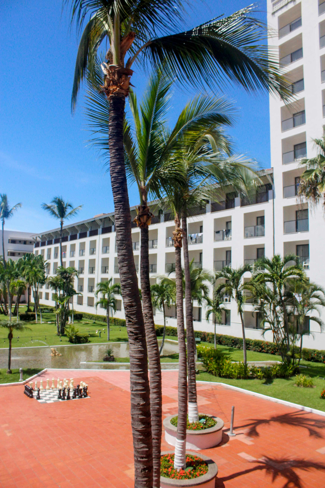
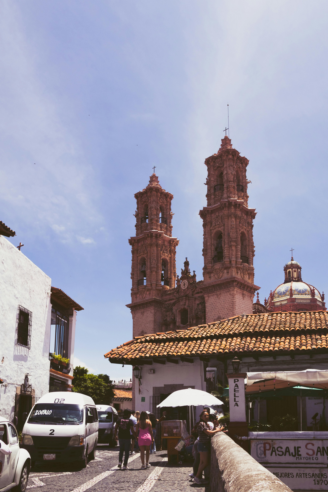
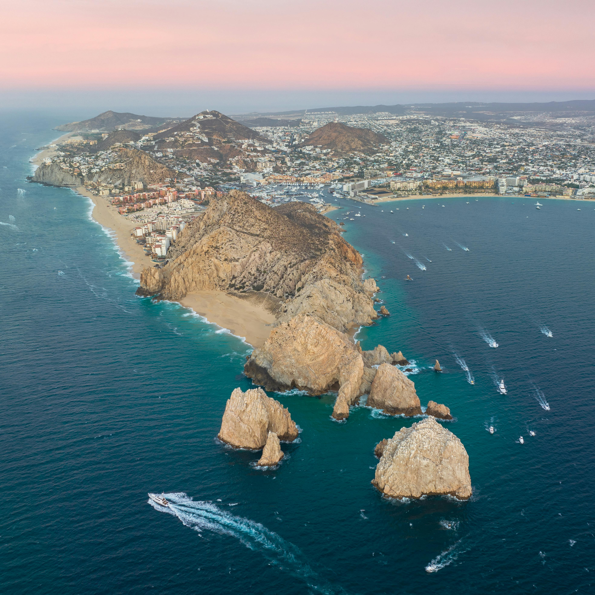
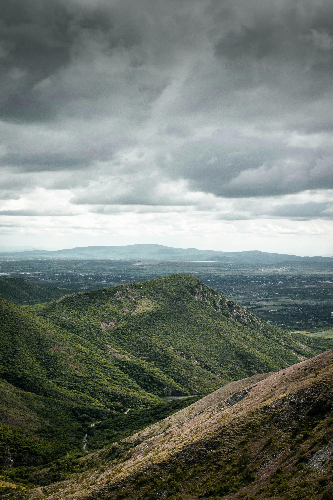

Best Travel Tips

- Best time to visit: November to April for pleasant weather, especially for sightseeing.
- Language: Spanish is the official language; English is common in tourist areas.
- Currency: Mexican Peso (MXN); carry cash for smaller purchases.
- Health precautions: Drink bottled water to avoid stomach issues.
- Respect local customs: Familiarize yourself with local traditions.
Best Cuisines and Dining Recommendations
- Tacos: Corn tortillas filled with meats, beans, or vegetables.
- Enchiladas: Tortillas rolled with filling, topped with chili sauce.
- Guacamole: A creamy dip made from avocados, perfect with tortilla chips.
- Tamales: Steamed corn dough with savory or sweet fillings.
- Chiles en Nogada: Poblano peppers stuffed with meat and topped with walnut sauce.
Best Accommodation Options

- Luxury Hotels: Explore high-end options in cities like Cancun and Mexico City.
- Boutique Hotels: Unique stays in cultural hubs like Oaxaca and Guadalajara.
- Hostels: Affordable choices for backpackers in major tourist areas.
- Airbnb: Rental options for a more local experience.
Best Local Culture and Traditions

- Music: Experience mariachi and traditional folk music.
- Día de los Muertos: Festival honoring deceased loved ones with vibrant altars and festivities.
- Art: Rich artistic heritage from ancient pottery to modern murals.
- Festivals: Year-round celebrations including Carnival and local fiestas.
Best Top Tourist Attractions

- Chichen Itza: Ancient Mayan city with the famous El Castillo pyramid.
- Tulum: Beachside ruins overlooking the Caribbean.
- Cancun Beaches: Known for white sandy beaches and clear waters.
- Mexico City: Visit the historic center and vibrant markets.
- Oaxaca: Renowned for its architecture and indigenous cultures.
Best Transportation Guides

- Public Transport: Efficient bus and metro systems in major cities.
- Taxis: Use licensed taxis or ride-sharing apps for safe travel.
- Buses: Long-distance buses are a popular way to travel between cities.
- Car Rentals: Consider renting a car for more remote destinations.
Best Outdoor Activities and Adventure

- Hiking: Explore the trails in national parks like Copper Canyon.
- Snorkeling: Discover marine life in Cozumel or the cenotes of the Yucatan Peninsula.
- Surfing: Catch waves at beaches like Puerto Escondido.
- Caving: Explore caves in the Sierra Madre mountains.
Best Weather and Best Time to Visit

- Best Seasons: November to April for dry and pleasant weather.
- Rainy Season: May to October can bring heavy rains, especially in coastal areas.
- Beach Destinations: Ideal year-round, but peak seasons are during winter and summer vacations.
- Climate: Varied across regions, so check local forecasts for specific areas.